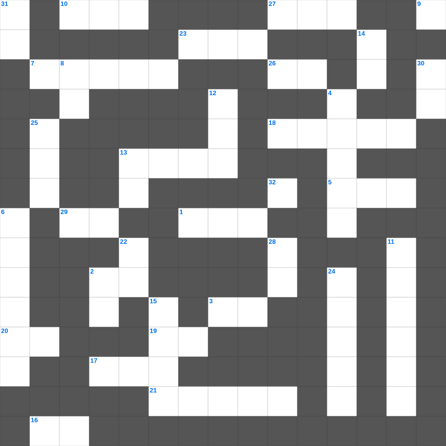

갈라디아서: 성령의 열매
📌 서비스 정의
십자가로세로는 교회 주보와 주일학교에서 사용할 수 있는 성경 기반 가로세로 퍼즐 서비스입니다. 성경 인물, 사건, 핵심 구절을 바탕으로 제작되었습니다. 온라인 풀이 및 인쇄 기능을 제공합니다.
📖 갈라디아서란?
갈라디아서는 율법주의에 빠지려는 갈라디아 교회를 향해, 오직 믿음으로 얻는 구원과 그리스도인의 자유를 강하게 변호한 바울의 서신입니다.
📚 갈라디아서의 주요 사건·주제
바울의 사도권 변호 · 오직 믿음으로 의롭다 함 · 율법과 약속의 관계 설명 · 그리스도인의 자유 선언 · 성령의 아홉 가지 열매
갈라디아서의 말씀을 퀴즈로 배우는 갈라디아서 성경공부 자료입니다. 가로 힌트와 세로 힌트를 보고 35개의 단어를 맞춰보세요. 인쇄도 가능하고 정답 확인도 바로 되니 소그룹 모임이나 가정 예배 시간에도 활용하실 수 있습니다.

📝 가로 힌트
1. 안드레의 형제
2. 곡물로 드리는 제사
3. 새 예루살렘 성곽의 첫 번째 기초석
5. 시편, 잠언, 전도서 등을 일컫는 말
7. 아브라함이 떠난 고향
10. 바울이 아고라에서 복음을 전한 도시
13. 예수님을 은 30에 판 제자
16. 십계명이 새겨진 것
17. 이스라엘 백성이 요단강을 건너 처음 도착한 성
18. 입다가 승리 후 처음 나온 이를 바치기로 한 서원
19. 다윗이 골리앗을 쓰러뜨린 무기
20. 쓴 물이 단물로 변한 곳
21. 바울과 실라가 감옥에서 한 행동
23. 맥추절 혹은 칠칠절이라 불리는 신약의 절기
26. 이스라엘이 430년 동안 거주한 나라
27. 마태, 마가, 누가, 요한복음
29. 혼인 잔치에 이것을 입지 않은 사람
32. 주의 말씀은 내 발에 이것이요 내 길에 빛이니이다
📝 세로 힌트
2. 장래에 이루어질 좋은 일을 기다리는 마음
4. 성경의 맨 마지막 책
6. 성전 낙성식 때 솔로몬이 드린 제물 수
8. 예수님이 우리 죄를 대신해 돌아가심
9. 공중에 나는 이것(다섯째 날)
11. 고라 자손의 반역
12. 베드로와 안드레의 고향
13. 땅의 짐승과 기는 것(여섯째 날)
14. 너는 내게 부르짖으라 내가 네게 이것하겠고
15. 요나를 삼켰던 존재
19. 그물에 가득 찬 각종 이것
22. 제물을 통째로 태워 드리는 제사
24. 바울이 유두고를 살린 사건
25. 최초의 이방인 교회가 세워진 곳
28. 바다의 물고기와 이것들
30. 야곱의 아들 수
31. 기드온의 300 용사가 든 것: 항아리와 이것
🧩 이 퍼즐에서 배우는 내용
이 퍼즐은 갈라디아서: 성령의 열매의 핵심 단어와 개념을 자연스럽게 복습할 수 있도록 구성되었습니다. 주일학교 수업이나 개인 성경공부에서 학습 내용을 점검하는 용도로 바로 활용할 수 있습니다.
🧑🏫 교회 교육 자료 활용
이 퍼즐은 주일학교 교재 추천 자료로 활용할 수 있고, 주일학교 주보에 넣기 좋은 분량으로 구성되어 있습니다. 수업용 주일학교 교안에 활동지로 붙이거나, 예배 후 복습용 주일학교 공과교재로 바로 사용할 수 있습니다.
🏷️ 키워드
갈라디아서 성경공부 자료, 갈라디아서, 십자가로세로, 성경퀴즈, 말씀퀴즈, 가로세로퍼즐, 주일학교 교재 추천, 주일학교 주보, 주일학교 교안, 주일학교 공과교재